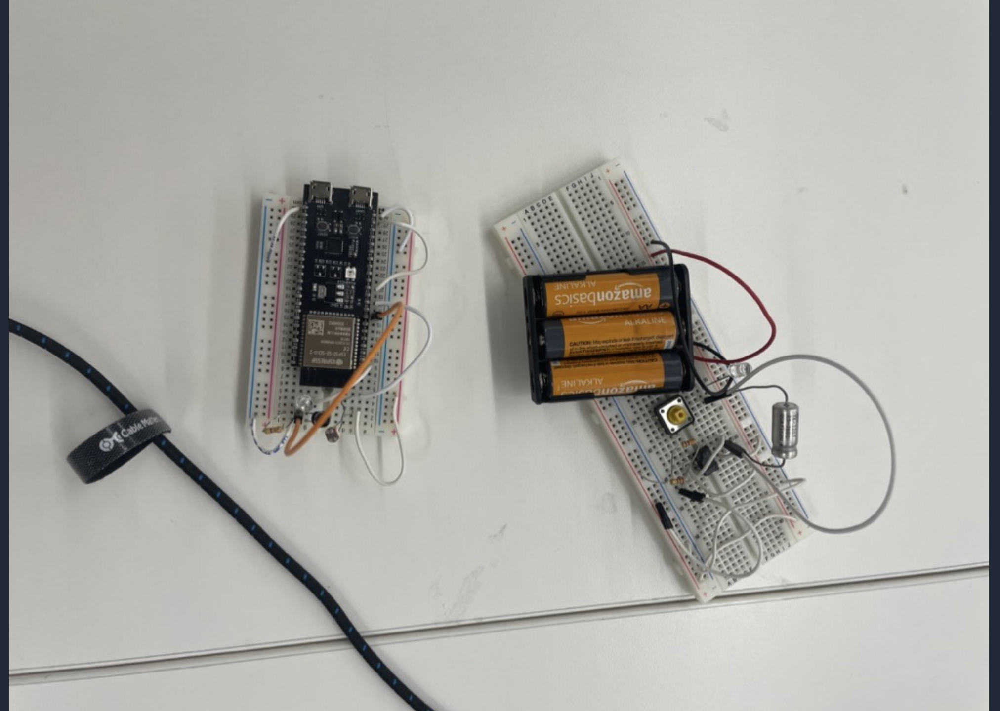
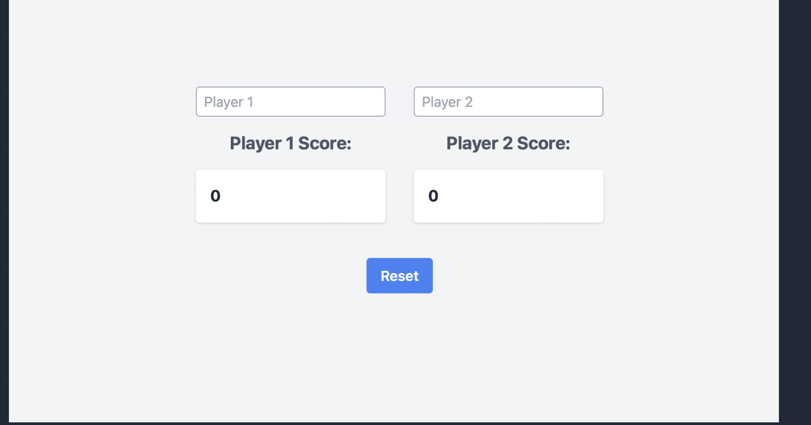

This week we learned about networking and IoT devices using the ESP32. We worked together in a group along with David G and Geoffery to build "laser tag" or essentially an IR shooter and receiver where the ESP 32 is used to commiunicate to a dtabase to count hits on a target. My main role in the project was helping David to set up the firebase and 555 timers which we wanted to use in order to pulse the laser so that it was not just a continuous beam but did not want to resort to using a full on microcontroller. The first step in the project though was to set up the ESP32. We used the Arduino IDE to program the ESP32. We had to install the ESP32 board manager in order to program the ESP32. We then had to get firebase up and runnign which was easy to do since we did so in lab. I helped David design the laser gun and he ran a bunch of simulations to figure out the right resistors and ciruit design to get the desired frequency and duty cycle.  After we figured that out we went on to the receiver side. We quickly figured out that a photoresistor did not work super well for reading a hit on target due to high ambient light. I fashioned a few makeshift reflectors out of tinfoil to try and help the problem but to no avail. Commercial solutions use IR lights and receivers so we pivoted to trying to do that. We had a few IR LEDs and receivers lying around so we tried to use those. We quickly found out that the IR LEDs had to be in pretty direct sight to be seen by the receiver. Ideally we would have an array of receivers and then be able to have a larger hit box but for short distances it seemd to work out all right. The final thing was building a simple web app to display the number of hits. We used the firebase API to get the number of hits and then used a simple page to display the number of hits as well as game controls. 